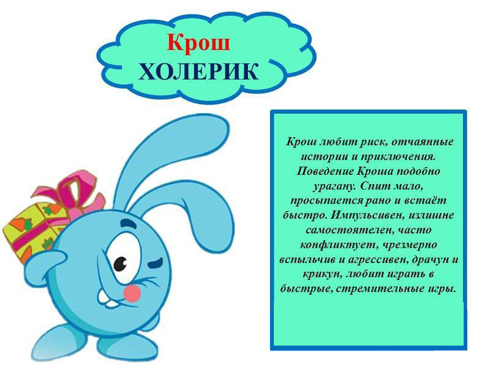

Условие и описание: скрыть
Вам предлагается ответить на вопросы, касающиеся Вашего обычного способа поведения. Постарайтесь представить типичные ситуации и дать первый «естественный» ответ, который придет Вам в голову. Отвечайте быстро и точно. Помните, что нет «хороших» или «плохих» ответов. Выбор ограничен всего двумя ответами: Да и Нет, выбирайте тот, который ближе.
По окончанию Вы узнаете к какому типу темперамента (сангвиник, холерик, меланхолик, флегматик) относитесь, а также Экстраверт Вы или Интроверт.
Тест состоит из 57 вопросов.
По типу темперамента Вы: будет текст, как и: будет текст 
Что бы оценить степень выраженности присущих Вам черт характера и интерпретировать полученный результат обратитесь к "кругу Айзенка":
- отмечен ваш результат.
Вопрос 1 из 57